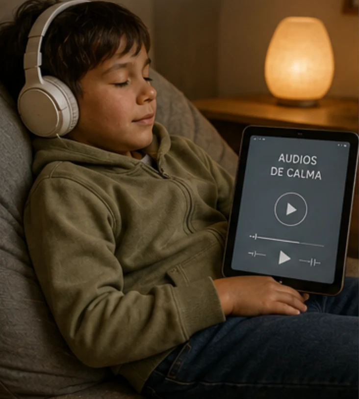

Un ratito cada día · calma y atención
Ritual diario
de calma
Un momento tranquilo para mirar hacia dentro, con vuestra presencia serena como guía. No para que se porte «bien», sino para que aprenda a notar lo que siente antes de que estalle.
Empezar el ritual ↓Para leer madre y padre, antes de empezar
Cuando lo que siente no tiene nombre,
sale en forma de rabieta.
A vuestro hijo le cuesta identificar lo que siente en el cuerpo. Cuando las sensaciones se acumulan sin poder expresarlas, se bloquea, se frustra y explota en forma de grito o rabieta.
El trabajo AIS —los audios + vuestro modelado sereno + límites claros + refuerzo— busca que empiece a notar lo que siente y a expresarlo; con el tiempo, eso suele dejar más espacio antes de estallar. No se trata de que deje de sentir, sino de que no se quede solo con lo que siente.
Vosotros sois el modelo: un niño no aprende a regularse porque se lo enseñen, sino porque ve al adulto regularse delante de él. Primero vosotros; él aprende con vuestra presencia.
El ritual de los audios
Al atardecer o en un momento tranquilo, entrad con él en la habitación y decidle con tono sereno:
«Ahora voy a hacer un audio de tranquilidad y atención. Si quieres, te pones conmigo; si no, me acompañas en silencio.»
Y os ponéis los auriculares o el móvil y hacéis el audio con normalidad, como modelo. Si quiere hacerlo con vosotros, perfecto. Si no, tampoco pasa nada: pero respeta el momento.
Las 11 pistas se cargan solo al darle a reproducir (ahorran datos).
Las 3 normas del momento
- 1No sale de la habitación mientras dura el audio.
- 2No te toca, interrumpe, empuja ni hace ruido a propósito.
- 3No coge el móvil ni la cama ni rompe el límite.
⚖️ Si rompe una norma
Con calma, sin discutir:
«Como no has respetado el momento, mañana lo volvemos a intentar y hoy no hay recompensa.»
Solo mantener el límite con serenidad.
🎁 Si lo respeta
Haya hecho el audio o solo acompañado, recibe 10 minutos de pantalla (lo que hayáis acordado):
«Gracias por respetar el momento. Ahora tienes tus 10 minutos.»
Refuerza su sensación de logro y las ganas de repetirlo.
¿Cómo ha ido hoy?
Parada de pensamiento y respiración
Primero vosotros: una respiración y notad dónde lo sentís (pecho, barriga, cuello). Después, cuando empiece a ponerse irritable o a punto de estallar, le decís: «Paramos un momento. Respiramos juntos.» Si no quiere: «Te noto así… ¿quieres que estemos contigo o prefieres un rato a solas?»
Practicadla también en ratos tranquilos (por ejemplo, después del audio), no solo en mitad del enfado: así la respiración es un encuentro, no un botón para parar la rabieta.
- Coge aire por la nariz hinchando la barriga.
- Mantén un segundo.
- Suelta el aire por la boca, despacio.
Y después le preguntáis: «¿Qué notas en el cuerpo ahora? ¿Barriga, pecho o cuello?»
El objetivo no es que lo sepa ni que se calme, sino que empiece a mirar hacia dentro. Si dice «no noto nada», vale: probad con las manos o los pies en el suelo.
Y después, volved juntos a lo que estabais haciendo (el juego, la cena, el rato juntos).
El juego del 5-4-3-2-1
Si está muy activado, primero respirad vosotros; después guiadle por los sentidos para traerlo al presente, sin prisa porque se calme. Id tocando cada paso:
Para vuestro psicólogo/a
Llevad el seguimiento a sesión
Esto no sustituye el trabajo con vuestro psicólogo/a: es la manera de sostener el ritual en casa entre sesiones. Guardad cómo van los días para revisarlo juntos con la barra de abajo.